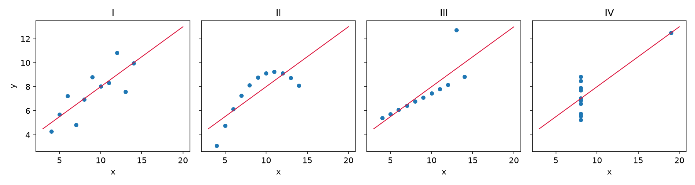
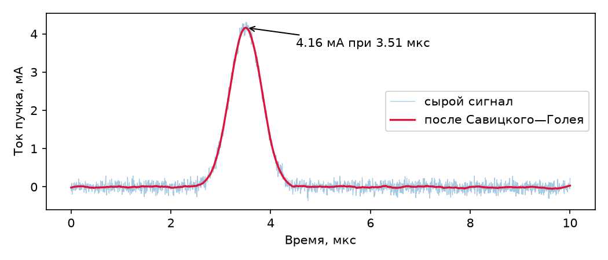
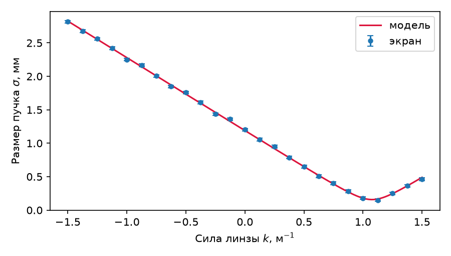
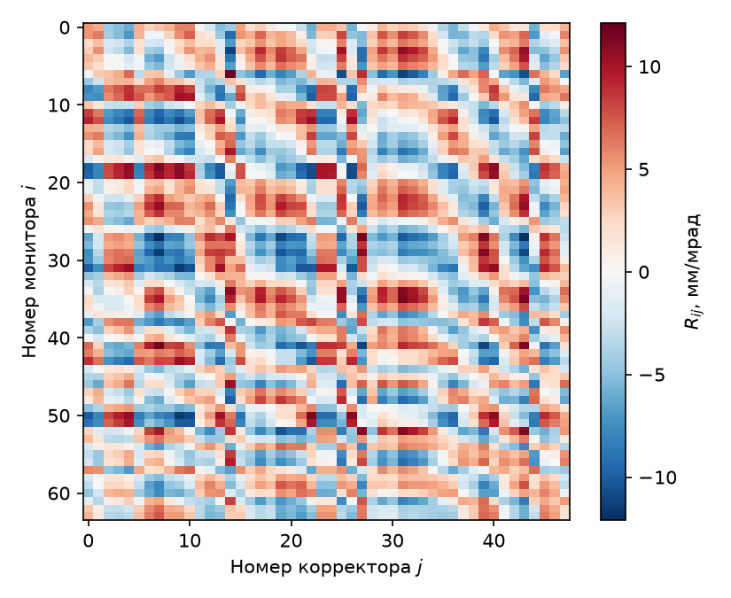
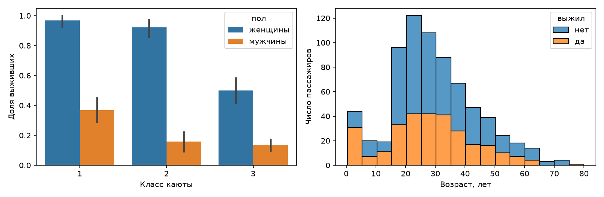
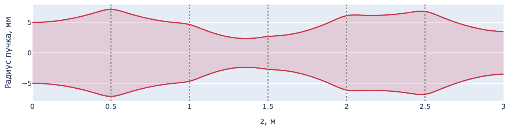
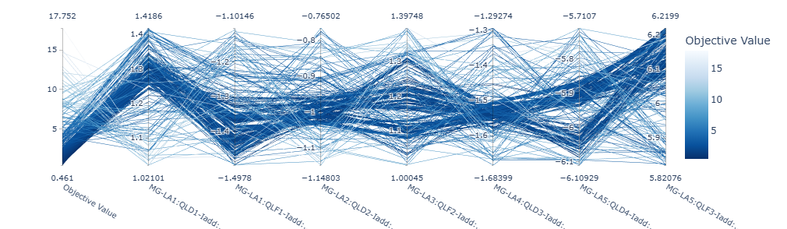
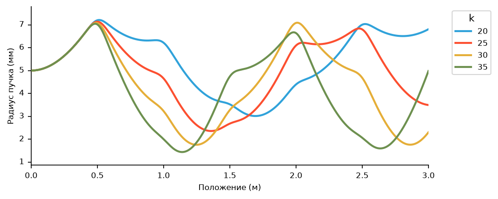

Визуализация на Python
Массивы NumPy и таблицы pandas хранят измерения, SciPy подгоняет модель и возвращает параметры с погрешностями; следующим шагом является визуальный контроль. Две тысячи отсчётов, выведенные в терминал, не дают представления о сигнале, тогда как на графике сразу видны и искажённый фронт импульса, и наводка от сети, и точка, выпадающая из общего ряда.
В настоящей главе рассматриваются библиотеки, которых физику обычно достаточно. Matplotlib строит статическое изображение для статьи и отчёта. Методы plot таблиц pandas и библиотека seaborn строят статистические графики прямо из таблицы. Plotly добавляет интерактивность, ценную при разборе сырых данных: подсказку с точными числами при наведении курсора, масштабирование, много измерений на одном полотне. HoloViews предлагает описывать данные вместо того, чтобы строить график.
Все данные, показанные ниже, вычислены непосредственно в листингах, так что код главы выполняется подряд, от первой строки до последней. Листинги выполнены на одной машине — виртуальной машине под Python 3.12 с Matplotlib 3.11, seaborn 0.13, Plotly 7.1 и HoloViews 1.23, на которой записаны демонстрации лекции «Визуализация данных на Python». Рисунки главы построены этими листингами, а страницы Plotly сняты в браузере.
Слайды к главе. Назначение графика, устройство фигуры Matplotlib, оформление рисунков для статьи, поля и палитры, статистические графики и интерактивные графики Plotly и HoloViews изложены также в лекции «Визуализация данных на Python» с демонстрациями в терминале; слайды лекции доступны на сайте книги и в PDF.
Назначение графика
Сводные статистики не заменяют взгляда на данные. Это наглядно показал статистик Ф. Энскомб в 1973 году: четыре набора по 11 точек с одинаковыми средними, дисперсиями, корреляцией и прямой регрессии устроены совершенно по-разному.
import numpy as np
import matplotlib.pyplot as plt
x = np.array([10, 8, 13, 9, 11, 14, 6, 4, 12, 7, 5], dtype=float)
x4 = np.array([8, 8, 8, 8, 8, 8, 8, 19, 8, 8, 8], dtype=float)
ys = {'I': [8.04, 6.95, 7.58, 8.81, 8.33, 9.96, 7.24, 4.26, 10.84, 4.82, 5.68],
'II': [9.14, 8.14, 8.74, 8.77, 9.26, 8.10, 6.13, 3.10, 9.13, 7.26, 4.74],
'III': [7.46, 6.77, 12.74, 7.11, 7.81, 8.84, 6.08, 5.39, 8.15, 6.42, 5.73],
'IV': [6.58, 5.76, 7.71, 8.84, 8.47, 7.04, 5.25, 12.50, 5.56, 7.91, 6.89]}
fig, axes = plt.subplots(1, 4, figsize=(12, 3.2), sharey=True)
print('набор ср. x ср. y дисп. x дисп. y корр. наклон сдвиг')
for ax, (name, y) in zip(axes, ys.items()):
xs, y = (x4 if name == 'IV' else x), np.array(y)
slope, shift = np.polyfit(xs, y, 1)
r = np.corrcoef(xs, y)[0, 1]
print(f'{name:>5} {xs.mean():6.2f} {y.mean():6.2f} {xs.var(ddof=1):8.2f} '
f'{y.var(ddof=1):8.2f} {r:6.3f} {slope:7.3f} {shift:6.2f}')
ax.scatter(xs, y, s=18)
grid = np.array([3.0, 20.0])
ax.plot(grid, slope * grid + shift, color='crimson', lw=1)
ax.set_title(name)
ax.set_xlabel('x')
axes[0].set_ylabel('y')
fig.tight_layout()
fig.savefig('anscombe.png', dpi=150)
набор ср. x ср. y дисп. x дисп. y корр. наклон сдвиг
I 9.00 7.50 11.00 4.13 0.816 0.500 3.00
II 9.00 7.50 11.00 4.13 0.816 0.500 3.00
III 9.00 7.50 11.00 4.12 0.816 0.500 3.00
IV 9.00 7.50 11.00 4.12 0.817 0.500 3.00

У всех четырёх наборов совпадают средние 9,00 и 7,50, дисперсия x, равная 11,00, наклон 0,500 и сдвиг 3,00; дисперсия y равна 4,12–4,13, корреляция — 0,816–0,817. Рисунок же показывает четыре разные картины. В первом наборе — линейная зависимость с шумом, во втором — гладкая нелинейная кривая. В третьем десять точек из одиннадцати лежат точно на прямой с меньшим наклоном, около 0,35, а одиннадцатая, при x = 13, отстоит от неё вверх и смещает к себе прямую регрессии. В четвёртом наклон задаёт единственная точка. В 2017 году Дж. Мэтейка и Дж. Фицморис построили набор Datasaurus Dozen, где облака точек самой разной формы, вплоть до рисунка динозавра, имеют одинаковые до сотых средние, стандартные отклонения и корреляцию. Поэтому график является первым шагом анализа, а не последним: он показывает, какие статистики имеют смысл.
Вид графика выбирается по задаче.
| Задача | Вид графика | Функция |
|---|---|---|
| распределение величины | гистограмма, ящик с усами | hist, boxplot |
| зависимость y(x) | линия | plot |
| связь двух величин | точечная диаграмма | scatter |
| измерения с погрешностью | точки с отрезками погрешностей | errorbar |
| поле на сетке | цветовая карта, изолинии | imshow, contour |
| много параметров | параллельные координаты | Plotly |
Несколько правил делают график честным. Ось подписывается величиной и единицами измерения: «Ток пучка, мА». Масштаб выбирается по смыслу: логарифмический — для величин, меняющихся на порядки, например для спектров и профилей пучка, линейный — для остальных; ось столбцовой диаграммы начинается с нуля, поскольку длина столбца и есть величина, а обрезанная ось преувеличивает разницу в разы. Панели, которые сравнивают между собой, получают общие шкалы. Две величины с разными единицами, например давление и ток, строят на двух осях одна под другой с общей шкалой времени, а не на двух шкалах y одних осей: соотношение независимых шкал выбирается произвольно и может создать видимость связи. Круговые и объёмные диаграммы сравнивать трудно, поскольку длину глаз оценивает точнее, чем угол и площадь. Наконец, на графике нет ничего, что не несёт данных: объём, тени и лишние рамки отвлекают и искажают. Э. Тафти называет это отношением «чернил данных» ко всем чернилам рисунка, которое должно быть возможно большим.
Matplotlib
Matplotlib имеет два интерфейса. Первый из них, pyplot, унаследованный от MATLAB, хранит скрытую «текущую фигуру», в которую и добавляют команды наподобие plt.plot. Второй представляет фигуру и оси явными объектами, названными в коде своими именами. Предпочтителен второй: в нём видно, к каким осям относится каждый вызов, и код, растущий вместе с задачей, не нарушается, когда фигур становится несколько.
Фигура Figure — весь холст с полями и общим заголовком; именно она записывается в файл. Оси Axes — прямоугольник с координатами, отведённый под сам график, и на одной фигуре их может быть несколько. Шкалы XAxis и YAxis отвечают за пределы, деления и подписи. Всё нарисованное — линии, текст, прямоугольники — является художниками (Artist), и каждый метод осей возвращает созданный объект для последующей настройки.
Первый пример — осциллограмма, записанная с цилиндра Фарадея, то есть импульс тока пучка на фоне шума оцифровки.
rng = np.random.default_rng(42)
t = np.linspace(0, 10, 2000) # время, мкс
current = 4.2 * np.exp(-((t - 3.5) / 0.45) ** 2) # импульс тока пучка, мА
current += rng.normal(0, 0.10, t.size) # шум оцифровки
fig, ax = plt.subplots(figsize=(7, 3))
ax.plot(t, current, lw=0.8)
ax.set_xlabel('Время, мкс')
ax.set_ylabel('Ток пучка, мА')
ax.grid(alpha=0.3)
fig.tight_layout()
fig.savefig('waveform.png', dpi=300)
subplots возвращает пару из фигуры и осей. Построение выполняется в осях, сохранение — для фигуры. Вызов tight_layout подбирает поля так, чтобы подписи у осей не срезались краем. savefig записывает файл, а plt.show() открывает окно и блокирует скрипт до его закрытия. Если нужно и то и другое, savefig вызывается раньше show: после закрытия окна pyplot забывает фигуру, и plt.savefig записывает уже новую, пустую. На машине без экрана, например на сервере или в контейнере, Matplotlib выбирает бэкенд Agg: plt.show() там ничего не покажет, и графики сохраняются в файлы.
Сырой сигнал редко показывают отдельно: рядом помещают сглаженную кривую, а найденный максимум подписывают стрелкой.
from scipy.signal import savgol_filter
smooth = savgol_filter(current, 101, 3) # окно 101 отсчёт, полином 3-й степени
top = smooth.argmax()
fig, ax = plt.subplots(figsize=(7, 3))
ax.plot(t, current, lw=0.6, alpha=0.4, label='сырой сигнал')
ax.plot(t, smooth, lw=1.6, color='crimson', label='после Савицкого—Голея')
ax.annotate(f'{smooth[top]:.2f} мА при {t[top]:.2f} мкс',
xy=(t[top], smooth[top]), xytext=(t[top] + 1.0, smooth[top] - 0.5),
arrowprops={'arrowstyle': '->'})
ax.set_xlabel('Время, мкс')
ax.set_ylabel('Ток пучка, мА')
ax.legend(loc='center right')
fig.tight_layout()
fig.savefig('waveform-smooth.png', dpi=300)

Две кривые, наложенные в одних осях, различают толщиной, прозрачностью и цветом, а метод legend собирает подписи, переданные параметром label. Метод annotate размещает надпись со стрелкой, протянутой от точки xytext к точке xy на самом графике.
Форматы файлов
Формат файла определяется расширением имени. PNG — растр: число точек равно размеру фигуры в дюймах, умноженному на плотность dpi, и фигура 7 × 3 дюйма при 300 точках на дюйм даёт 2100 × 900 точек; для слайдов и веба достаточно 150–300 точек на дюйм. SVG и PDF — векторные форматы, не теряющие чёткости при увеличении; PDF вставляется в статью, в том числе в LaTeX. По умолчанию Matplotlib записывает текст в SVG кривыми, и подписи правятся в редакторе как текст только при rcParams['svg.fonttype'] = 'none'; в PDF встраиваются шрифты Type 3, а для издательств, требующих шрифтов TrueType, задают rcParams['pdf.fonttype'] = 42. Шумная кривая из двух тысяч отсчётов в векторном файле хранится как две тысячи вершин, и с ростом числа точек векторный файл быстро растёт. Плотное облако точек растеризуют аргументом rasterized=True: точки сохраняются растром, а оси и подписи остаются векторными, и PDF со ста тысячами точек уменьшается в десятки раз.
Подписи с формулами и погрешности
Следующий пример — скан по параметру. Изменяя оптическую силу квадрупольной линзы k = 1/f перед экраном, снимают размер пучка, а по параболе, восстановленной подгонкой, вычисляют эмиттанс; сам метод рассмотрен в главе про SciPy. Измерения, снабжённые погрешностями, изображает errorbar.
l = 1.2 # расстояние «линза — экран», м
eps, beta0, alpha0 = 0.12e-6, 6.94, -1.69 # эмиттанс, м·рад, и параметры Твисса
gamma0 = (1 + alpha0 ** 2) / beta0
def beam_size(k):
"""Размер пучка на экране, м, при оптической силе тонкой линзы k = 1/f."""
R11, R12 = 1 - k * l, l
return np.sqrt(eps * (R11**2 * beta0 - 2*R11*R12*alpha0 + R12**2*gamma0))
k = np.linspace(-1.5, 1.5, 25) # сила линзы в скане, 1/м
meas = beam_size(k) + rng.normal(0, 20e-6, k.size) # ошибка измерения 20 мкм
kk = np.linspace(-1.5, 1.5, 301) # плотная сетка для кривой модели
fig, ax = plt.subplots(figsize=(6, 3.4))
ax.errorbar(k, meas * 1e3, yerr=0.02, fmt='o', ms=4, capsize=3, label='экран')
ax.plot(kk, beam_size(kk) * 1e3, color='crimson', label='модель')
ax.set_xlabel(r'Сила линзы $k$, м$^{-1}$')
ax.set_ylabel(r'Размер пучка $\sigma$, мм')
ax.legend()
fig.tight_layout()
fig.savefig('quadscan.png', dpi=300)
i = beam_size(kk).argmin()
print(f'минимум модели: {beam_size(kk)[i] * 1e3:.3f} мм при k = {kk[i]:.2f} 1/м')
минимум модели: 0.158 мм при k = 1.08 1/м

Подписи осей поддерживают подмножество TeX, заключённое в знаки доллара. Его набирает mathtext, встроенный в Matplotlib и не требующий установленного LaTeX, поэтому индексы, степени и греческие буквы записываются привычным образом. Строку с формулой помечают префиксом r, иначе обратный слеш будет обработан Python раньше Matplotlib. Полный LaTeX включает параметр text.usetex, но тогда на машине должен быть установлен TeX, а для русских подписей в text.latex.preamble подключают пакеты fontenc с кодировкой T2A, inputenc и babel: с преамбулой по умолчанию LaTeX кириллицу не обрабатывает, и сохранение завершается ошибкой.
Параметр yerr задаёт половину отрезка погрешности, fmt — маркер без соединяющей линии, capsize — поперечные засечки. Отрезок может означать стандартное отклонение, стандартную ошибку среднего или доверительный интервал, поэтому подпись рисунка в статье называет, что именно изображено. Модель рисуется по плотной сетке: кривая через 25 точек скана была бы ломаной, а её наименьшая точка — лишь ближайшим к минимуму узлом. Минимум модели, 0,158 мм при k ≈ 1,08 1/м, лежит между узлами скана, взятыми с шагом 0,125 1/м, и потому эмиттанс восстанавливают подгонкой параболы, а не по наименьшему измерению.
В русскоязычной статье десятичный разделитель на осях — запятая, а Matplotlib по умолчанию ставит точку, как и рисунки этой главы. Запятую ставит параметр axes.formatter.use_locale = True после установки русской локали вызовом locale.setlocale(locale.LC_NUMERIC, 'ru_RU.UTF-8'); локаль при этом должна быть установлена в системе.
Поля и палитры
Двумерный массив отображает imshow, окрашивающий каждую ячейку по её значению. Пример — матрица отклика замкнутой орбиты из главы о коррекции орбиты: элемент матрицы определяется бета-функциями в мониторе и корректоре и разностью их бетатронных фаз.
n_bpm, n_cor, nu = 64, 48, 8.42
phi_b = np.sort(rng.uniform(0, 2 * np.pi * nu, n_bpm)) # фазы мониторов
phi_c = np.sort(rng.uniform(0, 2 * np.pi * nu, n_cor)) # фазы корректоров
beta_b = rng.uniform(4.0, 24.0, n_bpm) # бета-функция, м
beta_c = rng.uniform(4.0, 24.0, n_cor)
dphi = np.abs(phi_b[:, None] - phi_c[None, :])
R = (np.sqrt(beta_b[:, None] * beta_c[None, :]) / (2 * np.sin(np.pi * nu))
* np.cos(dphi - np.pi * nu))
print(R.shape)
lim = np.abs(R).max()
fig, ax = plt.subplots(figsize=(5.5, 4.5))
im = ax.imshow(R, cmap='RdBu_r', vmin=-lim, vmax=lim, aspect='auto')
fig.colorbar(im, ax=ax, label=r'$R_{ij}$, мм/мрад')
ax.set_xlabel('Номер корректора $j$')
ax.set_ylabel('Номер монитора $i$')
fig.tight_layout()
fig.savefig('response.png', dpi=300)
(64, 48)

Палитру выбирают по смыслу величины. Для знакопостоянной величины подходит последовательная палитра, светлота которой меняется монотонно: viridis, принятая в Matplotlib по умолчанию с версии 2.0, magma или cividis. Такие палитры различимы и в чёрно-белой печати, и людьми с нарушениями цветового зрения. Для величины, меняющей знак, как элементы матрицы отклика, подходит расходящаяся палитра со светлым центром, такая как RdBu_r, и границы vmin и vmax задаются симметричными, иначе светлый центр сместится с нуля и изображение будет вводить в заблуждение. Симметричные границы задаёт и нормировка CenteredNorm, а TwoSlopeNorm(vcenter=0) помещает ноль в центр палитры и при несимметричном диапазоне. Категории без порядка кодируют качественной палитрой, например tab10. Радужная палитра jet, унаследованная от старых пакетов, неравномерна по светлоте: светлее всего в ней промежуточные значения, окрашенные голубым и жёлтым, а не наибольшие, поэтому на плавно меняющейся величине появляются ложные границы, а настоящие перепады теряются. Величины с большим динамическим диапазоном — профили пучка, спектры — показывают с логарифмической нормировкой LogNorm.
Ячейки у imshow равны между собой, а физическая сетка часто неравномерна, и для неё применяют pcolormesh, принимающий сами координаты узлов. Физические границы изображения задаются параметром extent, и номера пикселей на осях сменяются метрами, а origin='lower' помещает начало координат внизу, как принято в физике. Изолинии и заполненные уровни строят contour и contourf, векторное поле — quiver и streamplot. Цветовая шкала colorbar с подписью величины и единиц обязательна: без неё цвет не переводится в число.
Рисунок для статьи
Фигуру для статьи строят сразу в размере колонки журнала, например 8,6 см, или 3,4 дюйма, в журналах Американского физического общества, со шрифтом, близким к шрифту текста: большая фигура, уменьшенная при вёрстке, превращает подписи в нечитаемо мелкие. Повторяющиеся настройки выносятся в rcParams один раз на весь скрипт, в файл стиля, подключаемый plt.style.use, или в контекст plt.rc_context, действующий внутри одного блока.
style = {
'figure.figsize': (3.4, 2.4), # колонка журнала APS, 8,6 см
'font.size': 9,
'axes.grid': True,
'grid.alpha': 0.3,
'savefig.dpi': 300,
}
with plt.rc_context(style): # на весь скрипт: plt.rcParams.update(style)
fig, (up, down) = plt.subplots(2, 1, sharex=True, figsize=(3.4, 4),
layout='constrained')
up.plot(t, current, lw=0.6)
up.set_ylabel('Ток, мА')
down.plot(t, smooth, color='crimson')
down.set_ylabel('Сглажено, мА')
down.set_xlabel('Время, мкс')
fig.align_ylabels()
fig.savefig('report.pdf') # вектор, не теряющий чёткости при печати
Параметр sharex=True связывает оси подграфиков, и подписи по времени печатаются только под нижним. Параметр layout='constrained' раскладывает оси и подписи без наложений и в пределах фигуры, а align_ylabels выравнивает подписи соседних осей. Обрезка полей bbox_inches='tight' здесь не нужна: она сохраняет прямоугольник, охватывающий элементы фигуры, с полем 0,1 дюйма, и размер файла перестаёт совпадать с заданным — фигура шириной 3,4 дюйма с раскладкой constrained сохраняется шириной около 3,52 дюйма, и при вставке в колонку рисунок вместе со шрифтом уменьшается на 3 %. Для печати сохраняют векторный формат, PDF или SVG; растровый PNG с плотностью 300 точек на дюйм предназначен для слайдов и веба. Все рисунки статьи удобнее строить одним скриптом: правка стиля тогда обновляет весь набор сразу.
Анимация
Matplotlib строит и анимацию. FuncAnimation вызывает функцию для каждого кадра; функция меняет данные уже созданных художников — set_ydata у линии, set_data у точек, set_array у изображения, — что намного быстрее, чем строить график заново. Готовая анимация сохраняется методом save: GIF записывает библиотека Pillow, устанавливаемая вместе с Matplotlib, а MP4 — программа ffmpeg, которую устанавливают отдельно.
from matplotlib.animation import FuncAnimation
xg = np.linspace(-10, 10, 400)
def packet(x, s):
"""Гауссов волновой пакет, смещённый на s."""
return np.exp(-((x - s) / 2) ** 2) * np.cos(3 * (x - s))
fig, ax = plt.subplots(figsize=(6, 2.5))
line, = ax.plot(xg, packet(xg, -5.0))
ax.set_xlabel('Координата x, мкм')
ax.set_ylabel('Амплитуда, отн. ед.')
def update(i):
line.set_ydata(packet(xg, -5.0 + 0.25 * i))
return (line,)
anim = FuncAnimation(fig, update, frames=40, interval=50)
anim.save('packet.gif', writer='pillow', fps=20)
ax.plot возвращает список линий, отсюда запятая в line, =. В блокноте Jupyter анимацию показывает вызов HTML(anim.to_jshtml()) из модуля IPython.display или параметр rcParams['animation.html'] = 'jshtml'; без них при бэкенде inline, принятом в Jupyter по умолчанию, под ячейкой выводится только неподвижный кадр. Для физика анимация — способ показать эволюцию: волновой пакет во времени, огибающую пучка вдоль тракта, распределение частиц по шагам расчёта.
Статистические графики
Методы plot таблиц и столбцов pandas вызывают Matplotlib и возвращают его оси, поэтому дальнейшее оформление — логарифмический масштаб, подписи, пределы — выполняется методами этих осей. Пример — пассажиры «Титаника» из файла titanic.csv, рассмотренного в главе «NumPy и pandas».
import pandas as pd
df = pd.read_csv('titanic.csv')
ax = df.plot.scatter(x='Age', y='Fare', s=8, alpha=0.5, figsize=(6, 3))
ax.set_yscale('log')
ax.set_xlabel('Возраст, лет')
ax.set_ylabel('Плата за проезд, £')
print((df['Fare'] == 0).sum(), ((df['Fare'] == 0) & df['Age'].notna()).sum())
15 7
На логарифмической оси нулевые значения не изображаются: у 15 пассажиров плата за проезд равна нулю, и точки семи из них, с известным возрастом, исчезают с графика без предупреждения. То же происходит с нулевыми каналами спектра, построенного в логарифмическом масштабе.
Библиотека seaborn строит статистические графики поверх Matplotlib прямо из таблицы: столбцы задаются именами, а аргумент hue разбивает данные на группы по ещё одному столбцу и сам строит легенду.
pip install seaborn
import seaborn as sns
print(df.pivot_table(values='Survived', index='Sex', columns='Pclass').round(2))
data = df.assign(пол=df['Sex'].map({'female': 'женщины', 'male': 'мужчины'}),
выжил=df['Survived'].map({0: 'нет', 1: 'да'}))
fig, (left, right) = plt.subplots(1, 2, figsize=(11, 3.6))
sns.barplot(data, x='Pclass', y='Survived', hue='пол',
errorbar=('ci', 95), seed=0, ax=left)
sns.histplot(data, x='Age', hue='выжил', multiple='stack', bins=16, ax=right)
left.set(xlabel='Класс каюты', ylabel='Доля выживших')
right.set(xlabel='Возраст, лет', ylabel='Число пассажиров')
fig.tight_layout()
fig.savefig('titanic.png', dpi=150)
Pclass 1 2 3
Sex
female 0.97 0.92 0.50
male 0.37 0.16 0.14

Функция barplot по умолчанию показывает среднее с 95-процентным доверительным интервалом, вычисленным бутстрепом по 1000 повторных выборок; аргумент seed делает интервал воспроизводимым. Слева видно, что выжили 97 % женщин первого класса и 14 % мужчин третьего, а самый широкий интервал — у женщин третьего класса. Справа — гистограмма возраста, разбитая по исходу: в первом интервале, от 0,42 до 5,4 года, то есть среди детей не старше пяти лет, выжил 31 из 44, а больше всего пассажиров в возрасте 20–25 лет. Средствами одного Matplotlib те же графики потребовали бы группировки, расчёта интервалов и легенды вручную. Распределения seaborn строит функциями histplot, kdeplot, boxplot и violinplot, связь двух величин — scatterplot и regplot; heatmap показывает матрицу, например корреляций, а pairplot — все пары столбцов таблицы.
Plotly
При самостоятельном разборе данных требуется подвести курсор и прочитать точное число, выделить рамкой фрагмент и увеличить его, скрыть лишнюю кривую щелчком по легенде. Эти возможности предоставляет Plotly, строящий график в браузере поверх библиотеки plotly.js.
Слайды к главе. Plotly, HoloViews, анимация и выбор инструмента изложены также в шестой части лекции «Визуализация данных на Python» с демонстрацией в терминале; слайды лекции доступны на сайте книги и в PDF.
pip install plotly
Пример — огибающая пучка, вычисленная вдоль тракта. Данные даёт уравнение Капчинского—Владимирского, выведенное в отдельной главе, а тракт состоит из пяти соленоидов, расставленных через полметра.
import numpy as np
from scipy.integrate import solve_ivp
gamma = 1 + 2.0 / 0.511 # пучок 2 МэВ
beta = np.sqrt(1 - gamma ** -2)
perv = 2 * 100.0 / (17045 * (beta * gamma) ** 3) # первеанс при токе 100 А
eps = 1e-6 # эмиттанс, м·рад
z_lens = np.arange(0.5, 3.0, 0.5) # пять соленоидов через 0.5 м
z = np.linspace(0, 3, 400) # сетка вдоль тракта, м
def envelope(k):
"""Радиус пучка a(z), м, при жёсткостях соленоидов k."""
def rhs(s, y):
ks = (k * np.exp(-((s - z_lens) / 0.06) ** 2)).sum()
a, ap = y
return [ap, -ks * a + perv / a + eps ** 2 / a ** 3]
return solve_ivp(rhs, (0, 3), [5e-3, 0.0], t_eval=z, max_step=0.005).y[0]
a = envelope(np.full(5, 25.0)) * 1e3 # огибающая, мм
print(f'{a.min():.2f} {a.max():.2f}')
2.36 7.13
Первое изображение собирается вручную из объектов graph_objects, дающих полный контроль над каждой линией.
import plotly.graph_objects as go
fig = go.Figure()
fig.add_scatter(x=z, y=a, name='верх', line={'color': 'crimson', 'simplify': False},
hovertemplate='z = %{x:.2f} м<br>a = %{y:.2f} мм<extra></extra>')
fig.add_scatter(x=z, y=-a, name='низ', line={'color': 'crimson', 'simplify': False},
fill='tonexty', fillcolor='rgba(220,20,60,0.15)',
hoverinfo='skip')
for zi in z_lens:
fig.add_vline(x=zi, line_dash='dot', line_color='gray')
fig.update_layout(xaxis_title='z, м', yaxis_title='Радиус пучка, мм',
showlegend=False, height=350)
fig.write_html('envelope.html', include_plotlyjs='cdn')

Параметр simplify линии отключает её упрощение: по умолчанию plotly.js при отрисовке выбрасывает точки, почти лежащие на одной прямой, и плавная огибающая из четырёхсот точек становится заметно ломаной. Параметр hovertemplate задаёт содержимое всплывающей подсказки: %{x} и %{y} подставляют координаты точки, а <extra></extra> убирает служебную рамку с именем кривой. Метод write_html создаёт рядом самодостаточный файл, открываемый в любом браузере без Python. С ключом include_plotlyjs='cdn' страница загружает plotly.js из сети и занимает десятки килобайт, а со значением True библиотека встраивается внутрь, и файл разрастается до нескольких мегабайт, зато открывается без сети. В браузере при наведении курсора всплывает подсказка с положением и радиусом, прямоугольник, выделенный курсором, растягивается на всё поле, а двойной щелчок возвращает исходный масштаб. Масштабирование колесом мыши у двумерных графиков Plotly по умолчанию выключено и включается аргументом config={'scrollZoom': True} метода write_html. Статичный PNG или PDF из фигуры Plotly сохраняет метод write_image; в Plotly 7 он требует пакета kaleido версии 1 и установленного браузера Chrome.
Скан по параметру удобно показывать картой, поэтому расчёт выполняется для сорока одной жёсткости соленоидов, а полученные огибающие объединяются в один двумерный массив.
k_grid = np.linspace(15.0, 35.0, 41)
scan = np.array([envelope(np.full(5, k)) for k in k_grid]) * 1e3
heat = go.Figure(go.Heatmap(
x=z, y=k_grid, z=scan, colorscale='Viridis',
colorbar={'title': 'a, мм'},
hovertemplate='z = %{x:.2f} м<br>k = %{y:.1f} 1/м²'
'<br>a = %{z:.2f} мм<extra></extra>'))
heat.update_layout(xaxis_title='z, м',
yaxis_title='Жёсткость соленоидов k, 1/м²', height=380)
heat.write_html('scan.html', include_plotlyjs='cdn')
При наведении курсора на точку карты читаются три числа: положение вдоль тракта, жёсткость линз и радиус пучка; в Matplotlib для того же пришлось бы обращаться к массиву по индексам. Изображение, сохранённое в HTML, остаётся интерактивным и после закрытия Python, и такими картами удобно искать рабочую точку установки.
Миллион точек Plotly отрисовывает медленно: обычный Scatter рисуется в SVG, и каждая точка становится отдельным элементом страницы. Для больших массивов предусмотрен Scattergl, рисующий точки растром средствами WebGL на видеокарте; px.scatter сам переходит на него, когда точек больше тысячи.
Когда осей требуется больше трёх, применяют параллельные координаты, где каждая переменная получает свою вертикальную ось, а один опыт превращается в ломаную, пересекающую все оси сразу. Пример — триста случайных настроек тракта, каждая из которых оценивается по среднеквадратичному отклонению радиуса от целевых четырёх миллиметров.
import pandas as pd
import plotly.express as px
rng = np.random.default_rng(1)
trials = rng.uniform(18.0, 32.0, size=(300, 5)) # 300 случайных настроек
loss = np.array([np.sqrt(np.mean((envelope(k) - 4e-3) ** 2)) * 1e3
for k in trials]) # отклонение от 4 мм, мм
runs = pd.DataFrame(trials, columns=[f'k{i}' for i in range(1, 6)])
runs['loss'] = loss
labels = {f'k{i}': f'k{i}, 1/м²' for i in range(1, 6)} | {'loss': 'отклонение, мм'}
par = px.parallel_coordinates(runs, color='loss', labels=labels,
color_continuous_scale='Blues_r')
par.write_html('parallel.html', include_plotlyjs='cdn')
print(f'лучшая настройка: {loss.min():.2f} мм, худшая: {loss.max():.2f} мм')
лучшая настройка: 1.18 мм, худшая: 3.18 мм
Изображение ниже построено теми же параллельными координатами Plotly на настоящей задаче: тысяча прогонов оптимизации оптики линейного ускорителя инжектора ЦКП «СКИФ».

Тысяча строк по восемь чисел в виде таблицы нечитаема, а на параллельных координатах читается. Подписи оставлены такими, какими их вывела программа оптимизации. Крайняя левая ось, Objective Value, несёт значение целевой функции, заключённое между 0,461 и 17,752, а остальные отведены под добавки к токам квадруполей — каналы MG-LA1:QLD1-Iadd, MG-LA1:QLF1-Iadd, MG-LA2:QLD2-Iadd и так далее. Цветом закодирована та же целевая функция, и тёмные линии отмечают удачные прогоны. Там, где жгут линий сливается в узкую полосу, параметр является определяющим, и в эту полосу необходимо попасть. Там, где линии распределены по оси равномерно, параметр на результат почти не влияет, и его отдают оптимизатору целиком. Удачные сочетания видны, поскольку тёмные ломаные идут пучком. В браузере оси перетаскиваются курсором, а по каждой выделяется диапазон, и на экране остаются только прогоны, прошедшие отбор.
HoloViews
Matplotlib строит то, что ему указано, и потому требует расписывать каждый шаг, от подписи оси до заданного вручную цвета.
HoloViews построен на принципе «аннотировать данные, а не строить график». Пользователь описывает семантику данных, то есть что является аргументом, что значением и в каких они единицах, а библиотека сама выбирает представление. Один и тот же объект, собранный однажды, отрисовывается разными бэкендами: интерактивным bokeh, matplotlib или plotly.
pip install holoviews bokeh
Основой является элемент, контейнер с данными, знающий свой тип визуализации. hv.Curve задаёт непрерывную зависимость, hv.Scatter показывает дискретные измерения, hv.Image отображает величину на регулярной сетке. Измерениям задают удобочитаемые подписи и единицы, попадающие затем на оси и во всплывающие подсказки.
import numpy as np
import holoviews as hv
hv.extension('bokeh', 'matplotlib') # первый бэкенд — основной
rng = np.random.default_rng(42)
t = np.linspace(0, 10, 2000)
current = 4.2 * np.exp(-((t - 3.5) / 0.45) ** 2) + rng.normal(0, 0.10, t.size)
dim_t = hv.Dimension('t', label='Время', unit='мкс')
dim_i = hv.Dimension('I', label='Ток пучка', unit='мА')
wave = hv.Curve((t, current), dim_t, dim_i)
wave
В Jupyter объект, возвращённый последней строкой ячейки, отображается автоматически, так что вызывать функцию построения не требуется. С бэкендом bokeh панорамирование, масштабирование и подсказки доступны сразу, и подозрительный выброс, замеченный на графике, рассматривается вблизи без перестроения изображения.
hv.Points внешне похож на Scatter, однако семантика у него иная: обе координаты выступают независимыми измерениями, а точки просто располагаются на плоскости, как частицы на фазовой плоскости. Готовые элементы комбинируются операторами, из которых + размещает графики рядом, а * накладывает их в одних осях.
x = rng.normal(0, 1.0, 2000) # координата частиц, мм
xp = rng.normal(0, 0.3, 2000) # угол, мрад
phase = hv.Points((x, xp), ['x', "x'"])
grid = np.linspace(-3, 3, 200)
xx, yy = np.meshgrid(grid, grid)
spot = hv.Image(np.exp(-2 * (xx ** 2 + yy ** 2) / 1.2 ** 2), # пятно на экране
bounds=(-3, -3, 3, 3), kdims=['x', 'y'], vdims='I')
sparse = hv.Scatter((t[::200], current[::200]), dim_t, dim_i)
overlay = wave * sparse # в одних осях
layout = (wave + phase + spot).cols(3) # рядом, в три колонки
Совмещение работает благодаря тому, что каждый элемент самодостаточен: HoloViews определяет, что измерения у wave и sparse совпали, и сам выравнивает оси, подписи и легенду. Число колонок в компоновке задаёт метод .cols(), вызываемый на готовом объекте.
В Matplotlib скан по параметру превращается в цикл, объединяющий десяток подграфиков в одну фигуру, а HoloMap превращает тот же параметр в слайдер. Он принимает словарь, где каждому значению параметра сопоставлен элемент HoloViews, а не массив.
# модель тракта (z_lens, perv, eps, z) взята из раздела про Plotly
dim_z = hv.Dimension('z', label='Положение', unit='м')
dim_a = hv.Dimension('a', label='Радиус пучка', unit='мм')
def curve(k):
"""Огибающая пучка при жёсткости всех соленоидов k."""
def rhs(s, y):
ks = (k * np.exp(-((s - z_lens) / 0.06) ** 2)).sum()
a, ap = y
return [ap, -ks * a + perv / a + eps ** 2 / a ** 3]
a = solve_ivp(rhs, (0, 3), [5e-3, 0.0], t_eval=z, max_step=0.005).y[0]
return hv.Curve((z, a * 1e3), dim_z, dim_a)
hmap = hv.HoloMap({k: curve(k) for k in [20, 25, 30, 35]}, kdims='k')
hv.save(hmap, 'envelope-scan.html') # слайдер работает и без Python
static = hmap.overlay('k').opts(fig_inches=(8, 3.2), aspect=2.5, fontscale=0.8,
legend_position='right', backend='matplotlib')
hv.save(static, 'envelope-hv.png', backend='matplotlib', dpi=150)
dmap = hv.DynamicMap(curve, kdims='k').redim.range(k=(15.0, 35.0))

HoloMap вычисляет все кадры заранее и хранит их в памяти, зато сохраняется в самодостаточный HTML, который можно передать коллеге; библиотеки BokehJS и Panel страница загружает из сети. Метод overlay('k') накладывает кадры в одних осях, и тот же объект через бэкенд matplotlib сохраняется статичным рисунком; подписи «Положение (м)» и «Радиус пучка (мм)» HoloViews составил сам из описания измерений. DynamicMap вычисляет кадр по движению слайдера, что необходимо, когда параметр непрерывен или каждый расчёт дорог. Однако пересчёт кадра требует запущенного ядра Python: hv.save записывает в файл лишь несколько заранее вычисленных кадров, по умолчанию три значения параметра.
Оформление отделено от семантики и задаётся методом .opts() поверх готового объекта.
overlay.opts(
hv.opts.Curve(width=650, height=280, color='black'),
hv.opts.Scatter(size=7, color='crimson'),
)
# logz — логарифмическая шкала цвета, нужная пучкам и спектрам
# с большим динамическим диапазоном
spot.opts(width=380, height=340, cmap='inferno', colorbar=True, logz=True)
Часть опций зависит от бэкенда: ширина width и высота height заданы в пикселях у bokeh, а у matplotlib вместо них используются fig_inches и aspect. Полный список опций элемента выводит hv.help(hv.Curve).
Вокруг HoloViews сформировалась экосистема HoloViz. Пакет hvPlot после одного импорта добавляет к таблицам pandas метод .hvplot, заменяющий встроенный df.plot(); возвращает он обычные объекты HoloViews со всеми слайдерами и наложениями. Для десятков миллионов точек, например макрочастиц расчёта, служит пакет Datashader: операция rasterize агрегирует изображение в Python, и в браузер передаётся только растр. Библиотека Panel связывает графики, виджеты и текст в единый интерфейс, превращаемый командой panel serve app.py в веб-приложение, и мониторинг установки становится страницей в браузере без единой строки JavaScript.
Выбор инструмента
| Задача | Инструмент |
|---|---|
| рисунок для статьи | Matplotlib |
| статистика из таблицы | seaborn, методы plot pandas |
| разбор сырых данных | Plotly, HoloViews в Jupyter |
| скан по параметру | HoloMap, DynamicMap |
| таблица pandas в браузере | hvPlot: df.hvplot() |
| панель мониторинга установки | Panel: panel serve app.py |
Таким образом, для статьи и отчёта рисунок строится в Matplotlib сразу в размере колонки, с подписями величин и единиц и в векторном формате; статистические сводки по таблице быстрее получить средствами seaborn; для разбора сырых данных и передачи коллегам служат интерактивные страницы Plotly и HoloViews. Во всех случаях вид графика, масштаб осей и палитра выбираются по смыслу данных.
Полезные ссылки
- Галерея matplotlib, где изображение подбирается визуально, а код берётся готовым;
- Scientific Visualization: Python + Matplotlib Николя Ружье, книга про графики, предназначенные для научных статей;
- seaborn.pydata.org, руководство и галерея статистических графиков;
- plotly.com/python, справочник по типам графиков с разобранными примерами;
- holoviews.org и holoviz.org, документация HoloViews и обзор всей экосистемы;
- F. J. Anscombe. Graphs in Statistical Analysis // The American Statistician, 1973, т. 27, № 1 — статья с квартетом Энскомба;
- F. Crameri, G. E. Shephard, P. J. Heron. The misuse of colour in science communication // Nature Communications, 2020, т. 11 — о радужных палитрах и выборе палитры по смыслу величины;
- Уравнение огибающей и коррекция орбиты, главы этой книги, откуда взяты данные для примеров.